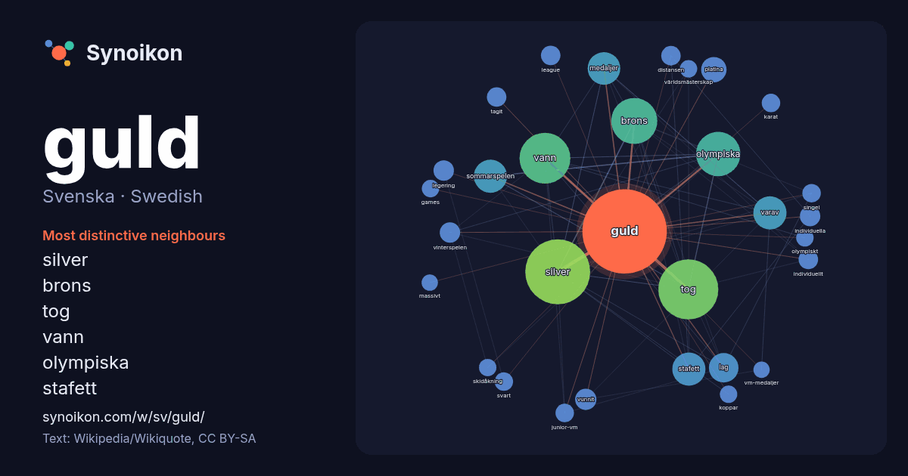

Svenska · Swedish · word of the day list
guld
“gold” · The words found around it in 723 instances from Swedish Wikipedia, Wikiquote.

Most distinctive neighbours
- silver 97×
- brons 52×
- tog 40×
- vann 33×
- olympiska 32×
- stafett 29×
- medaljer 28×
- varav 21×
- sommarspelen 21×
- platina 18×
- lag 16×
- legering 12×
- individuella 11×
- vunnit 11×
- distansen 11×
- individuellt 11×
- vinterspelen 11×
- karat 10.0×
- junior-vm 9.9×
- tagit 9.4×
× = how many times more often than in general Swedish Wikipedia text.
Most frequent neighbours
- silver 111
- tog 95
- vann 68
- brons 56
- olympiska 52
- meter 32
- sommarspelen 29
- stafett 29
- varav 29
- medaljer 28
- lag 23
- platina 17
- samt 15
- vunnit 12
- individuella 11
- legering 11
- sverige 11
- vinterspelen 11
- distansen 10
- individuellt 10
In context
- Guld (latin: aurum) är ett grundämne och mineral, med den kemiska beteckningen Au och atomnummer 79. Det är en ädelmetall tillhörande koppargruppen. Guld Wikipedia snippets · Guld
- P3 Guld är ett musikpris som sedan 2003 årligen delas ut av den svenska radiokanalen Sveriges Radio P3 till svenska artister. Jurygrupper från P3 utser Wikipedia snippets · P3 Guld
- Vitguld eller vitt guld är en legering av guld och någon vitmetall, eventuellt silver, koppar, zink eller mangan. Vitmetallen som tonar ner guldets gulhet Wikipedia snippets · Vitt guld
- Nordiskt guld (engelska: nordic gold) är en legering bestående av 89 % koppar, 5 % aluminium, 5 % zink och 1 % tenn. Legeringen innehåller inget guld, och Wikipedia snippets · Nordiskt guld
- Guld! är en svensk TV-serie i sex delar från 1988 i regi av Staffan Ling. Serien handlar om den lilla fiktiva orten Bergforsen, två liftande damer från Wikipedia snippets · Guld!
- Norrlands Guld är ett varumärke för öl av Dortmunder-typ som ägs av Spendrups. Varumärket introducerades 1965 av dåvarande Sollefteå Bryggeri, då som Norrlands Wikipedia snippets · Norrlands Guld
- Färgat guld är legeringar som innehåller guld, oftast 18 karat (75 % guld), men även 14 och 9 karat förekommer i handeln. Eftersom rent guld är för mjukt Wikipedia snippets · Färgat guld
- skickliga spelmän. Märket finns i valörerna guld, silver och brons. Den som erhåller förtjänstmärket i guld eller silver tilldelas titeln riksspelman. Wikipedia snippets · Zornmärket
More Swedish words
Precomputed on 2026-10-09 with default settings (±5 words, medium corpus). The interactive map can refresh it with live data.